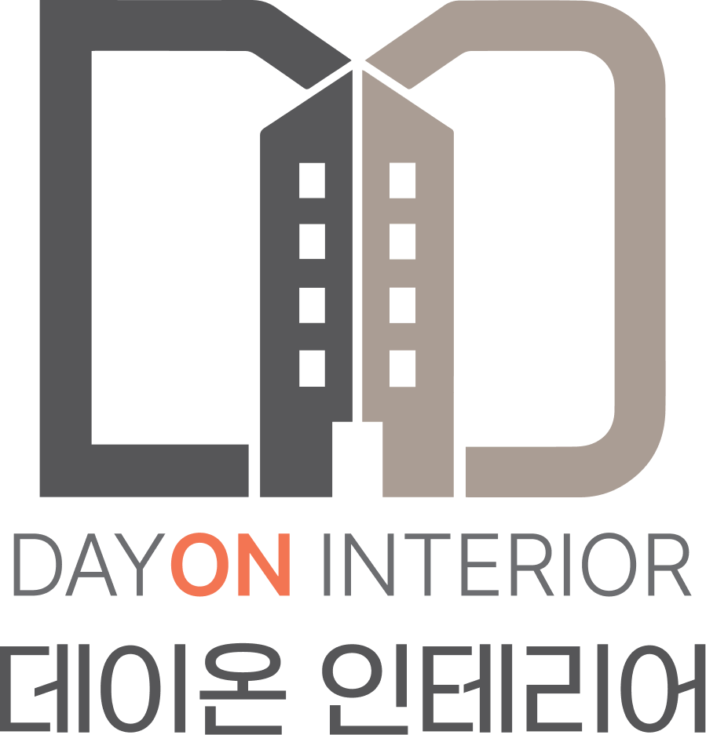
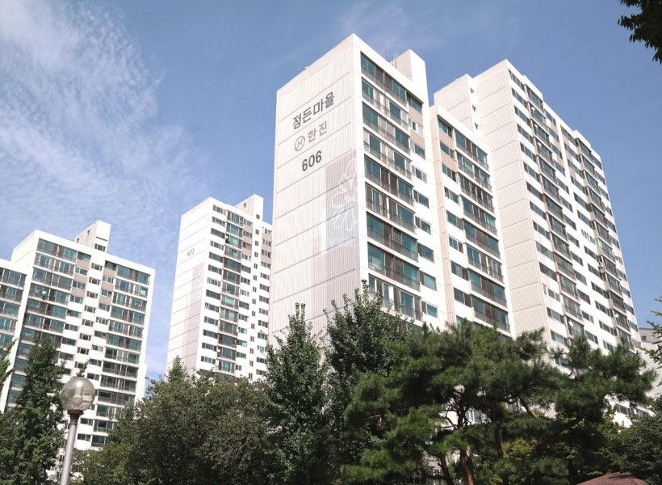
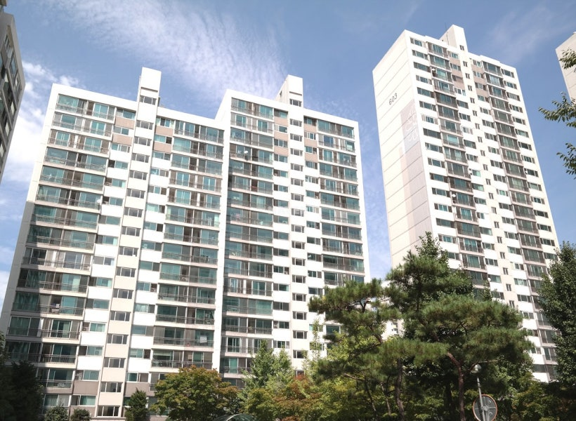
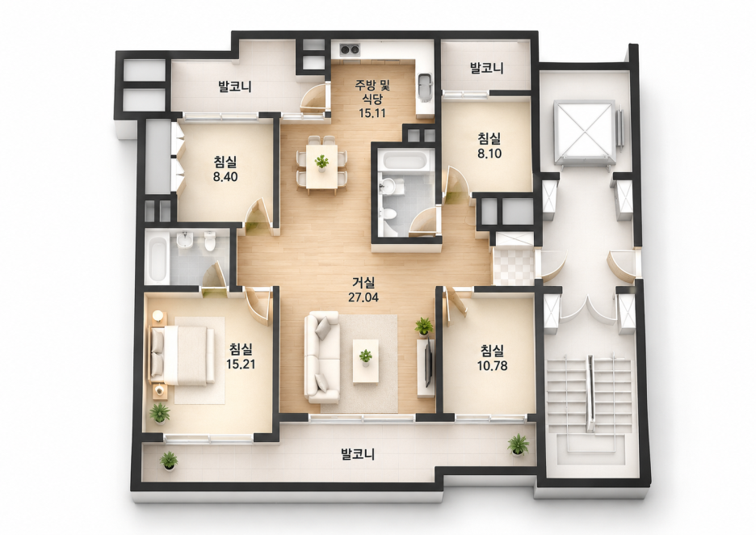
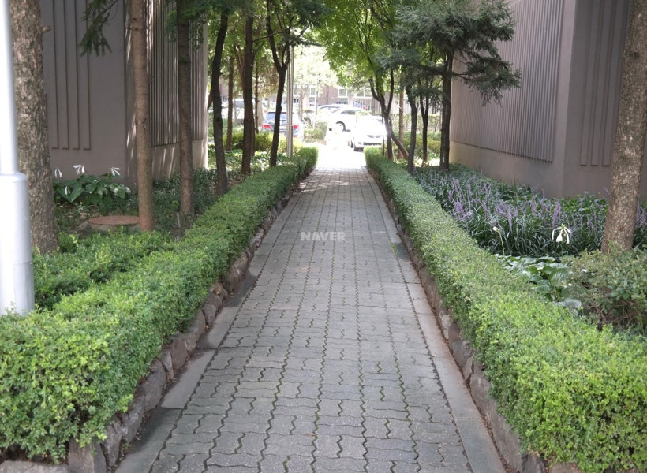
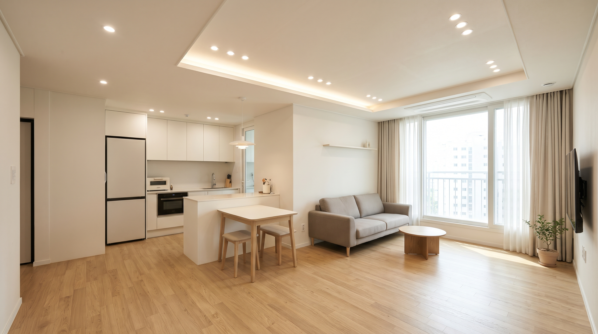
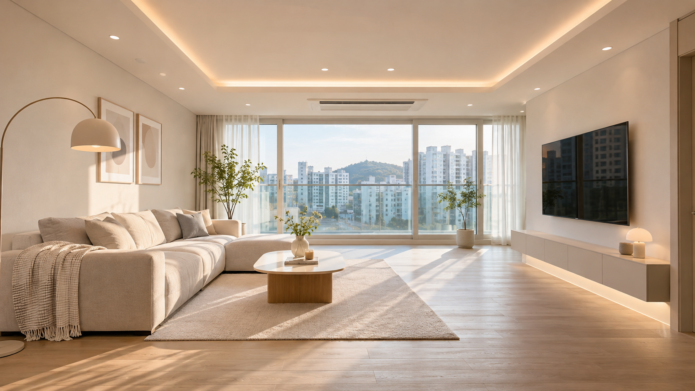
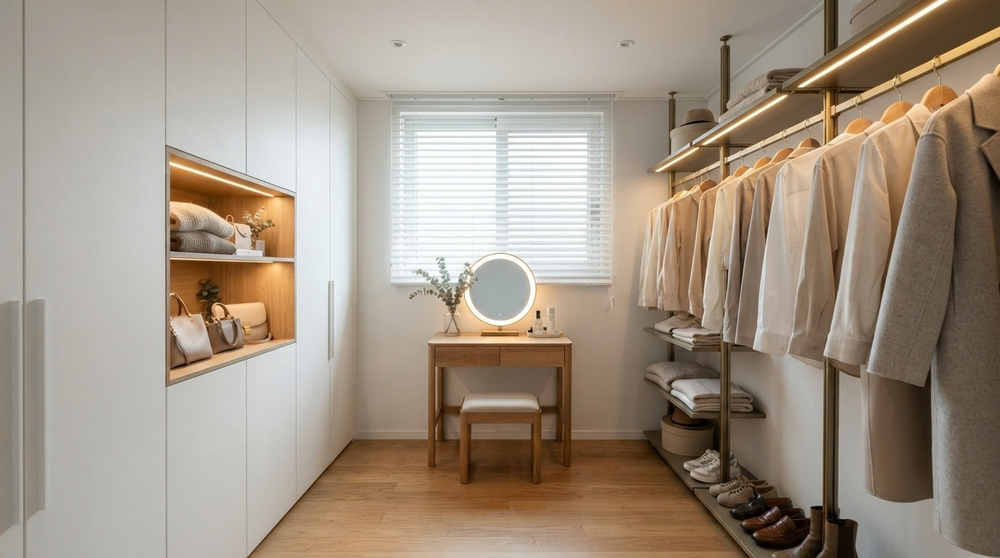
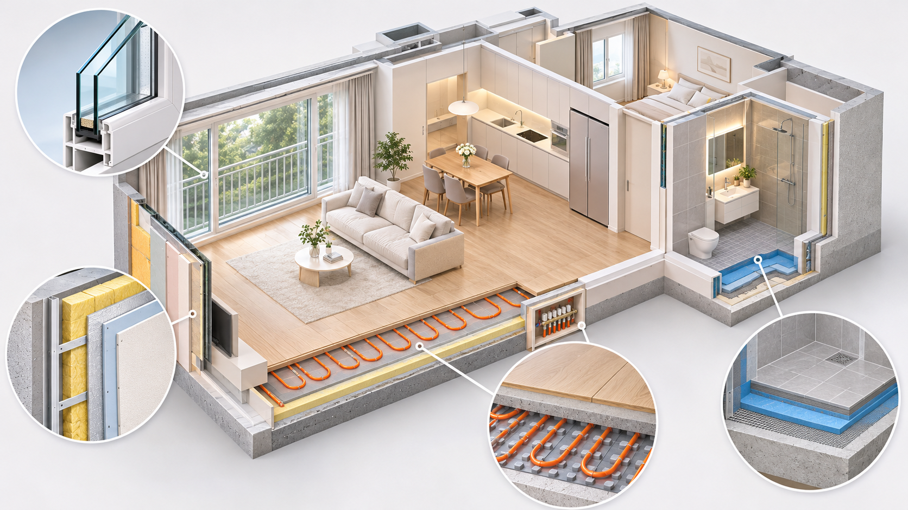

당신의 새로운 일상을 켜는
데이온 인테리어입니다.
공간이 바뀌면 일상이 달라집니다.
단순한 시공을 넘어
고객의 라이프스타일에 맞는 공간을 만들어갑니다.
안녕하세요. 분당·판교 지역의 아파트 구조와 라이프스타일을 연구하는 데이온 인테리어입니다.
분당신도시 정자동 일대는 탄탄한 학군과 쾌적한 공원, 편리한 교통 인프라가 잘 갖춰져 있어 실거주 목적으로 꾸준히 사랑받는 지역입니다. 그중에서도 정자동 중심부에 자리한 정든마을 한진6단지는 조용하고 정돈된 단지 분위기 덕분에 매매나 입주를 고민하시는 분들이 많은 곳인데요.
하지만 1995년에 준공되어 어느덧 30년이 넘은 구축 아파트이다 보니, 입주를 앞두고 어디부터 어디까지 수리해야 할지 막막함을 느끼기 쉽습니다. 특히 36평형은 일반적인 30평대 아파트와 달리 방이 4개로 구성된 독특한 평면을 가지고 있어, 기존 구조를 어떻게 활용하느냐에 따라 집의 넓이와 편리함이 크게 달라집니다.
오늘은 정자동 정든마을 한진6단지 36평형의 평면도를 꼼꼼히 살펴보면서, 이 평형만이 가진 구조적 특징과 구축 아파트에서 꼭 짚어봐야 할 리모델링 포인트를 자세히 정리해 드리겠습니다.

1. 정자동 정든마을 한진6단지 기본정보
본격적인 공간 분석에 앞서, 단지의 기본 구성을 먼저 살펴보겠습니다.
단지명: 정든마을 한진6단지 (한진6차)
위치: 경기도 성남시 분당구 내정로 24 (정자동 191)
준공연도: 1995년 6월 (2026년 기준 32년 차)
세대수 및 동 구성: 총 298세대 / 6개 동 (계단식 구조)
난방방식: 지역난방 (열병합)
전체 평형 구성: 36평 / 40평 / 47평 / 59평
이번 분석 평형: 36평형 (전용면적 99.60㎡ / 방 4개, 욕실 2개)
정든마을 한진6단지는 36평형부터 59평형까지 중대형 평형 위주로만 구성된 단지입니다. 전체 298세대 중 오늘 소개해 드리는 36평형(전용 약 99㎡)은 86세대를 차지하며, 단지 내에서 가장 실속 있는 평형으로 꼽힙니다.
(참고로 부동산 포털이나 과거 도면에 따라 기타공용면적 표기 차이로 인해 공급면적이 121.35㎡(36평형) 또는 126.84㎡(38평형)로 다르게 표기되기도 하지만, 실제 내부 전용면적은 약 99.6㎡로 동일한 평형입니다.)

2. 36평형 평면도 상세 분석: 장단점과 공간 활용성

첨부된 36평형 평면도를 보면 요즘 신축 아파트에서는 보기 드문 흥미로운 레이아웃을 확인할 수 있습니다.
① 30평대 중반에 구현된 여유로운 '방 4개' 구조
가장 큰 장점은 단연 침실이 4개라는 점입니다. 전면 발코니 쪽으로 안방(15.21㎡), 거실(27.04㎡), 전면 침실(10.78㎡)이 나란히 배치된 3Bay 판상형 구조이며, 후면 양쪽에도 침실 두 곳(8.40㎡, 8.10㎡)이 자리 잡고 있습니다. 방 4개가 모두 작지 않은 면적을 갖추고 있어 3~4인 가족이 거주하더라도 개인 침실 외에 드레스룸이나 서재를 여유 있게 확보할 수 있습니다.
② 세대 중앙에 위치한 공용 욕실과 동선의 특징
평면도 중앙을 보시면 공용 욕실이 현관 맞은편, 거실과 주방 사이 공간에 배치되어 있습니다.
이 구조는 어느 방에서나 공용 욕실로 접근하기 편하다는 장점이 있지만, 현관에 들어섰을 때 시선이 욕실 벽면에 막히고 주방과 거실 사이의 연결감이 다소 분절되어 보일 수 있다는 아쉬움이 있습니다.
③ 주방 조리 공간과 발코니 서비스 면적
주방 및 식당(15.11㎡)은 'ㄱ'자 구조로 설계되어 있으며, 좌측으로 폭 1,500mm의 넉넉한 후면 발코니가 연결되어 있습니다. 전·후면을 합친 발코니 서비스 면적이 약 25.92㎡(약 7.8평)에 달하기 때문에, 발코니 공간을 어떻게 구획하고 활용하느냐가 36평 리모델링의 핵심 열쇠가 됩니다.

3. 정든마을 한진6단지 36평 추천 리모델링 포인트 5가지
평면도의 구조적 특징과 30년 차 구축 아파트의 여건을 종합하여, 비용 대비 만족도를 높일 수 있는 핵심 리모델링 포인트를 우선순위별로 정리했습니다. 모든 벽을 허무는 무리한 공사보다는 기존 구조의 장점을 살리는 방향에 초점을 맞췄습니다.
[ POINT 1] 주방 레이아웃 개선 및 다용도실 수납 분리 (우선순위: 높음)
- 현재 구조와 예상되는 불편함
주방 우측 하단에 공용 욕실 벽체가 자리 잡고 있어, 일반 아파트를 생각하고 식탁과 양문형 냉장고, 김치냉장고를 모두 주방 내부에 배치하면 조리 동선이 좁아지고 답답해 보이기 쉽습니다.
- 추천 개선 방법 및 기대 효과
공용 욕실과 맞닿은 가벽 라인을 활용해 아일랜드 조리대나 다이닝 테이블을 연결하는 '11자형 대면형 주방' 또는 'ㄷ자형 레이아웃'으로 동선을 정돈하는 것을 추천합니다.
또한 주방 좌측의 넓은 후면 발코니(폭 1,500mm)에 단열과 타일 공사를 진행해 세탁실 겸 보조주방(키큰장·김치냉장고 수납 공간)으로 활용하면, 본 주방은 훨씬 넓고 깔끔한 다이닝 공간으로 유지할 수 있습니다.
- 시공 시 주의사항
싱크대 수전이나 배수구 위치를 이동할 경우 바닥 설비 배관의 구배(경사도) 확보가 가능한지 현장 철거 전후로 면밀히 확인해야 합니다.

[ POINT 2] 전·후면 발코니의 전략적 확장과 단열 보강 (우선순위: 높음)
- 현재 구조와 예상되는 불편함
비확장 상태일 경우 거실과 각 침실 앞에 폭 1.2m~1.5m의 발코니가 둘러져 있어, 실제 실내 공간이 평형 대비 좁게 느껴질 수 있습니다. 또한 연식이 오래된 외부 창호는 단열 성능이 떨어져 겨울철 외풍의 원인이 됩니다.
- 추천 개선 방법 및 기대 효과
모든 발코니를 무조건 확장하기보다 거실과 전면 침실(10.78㎡)은 확장하여 개방감과 학습·휴식 공간을 넓히고, 안방 발코니는 그대로 유지해 화단이나 빨래 건조, 단열 버퍼 존(완충 공간)으로 활용하는 방식이 실용적입니다. 확장 부위에는 로이(Low-E) 복층유리가 적용된 고단열 시스템 창호나 이중창을 시공하면 냉난방 효율이 눈에 띄게 개선됩니다.
- 시공 시 주의사항
발코니 확장 및 날개벽 철거는 내력벽 해당 여부와 아파트 관리규약, 지자체 행위허가 기준을 반드시 먼저 검토해야 합니다. 확장 부위 바닥 난방 배관 연결 시 기존 배관과의 호환성과 단열재 밀착 시공이 필수입니다.

※ 본 이미지는 36평형 거실 확장 및 조명 연출의 이해를 돕기 위해 제작된 인테리어 콘셉트 이미지입니다.
[ POINT 3] 현관~거실 중심부를 정돈하는 욕실 외벽 디자인과 중문 (우선순위: 보통)
- 현재 구조와 예상되는 불편함
현관문을 열고 들어왔을 때 정면에 공용 욕실 벽면과 문이 바로 보이는 구조입니다. 현관과 거실, 작은방 입구가 만나는 지점이라 문짝이 많이 보이면 시각적으로 산만해 보일 수 있습니다.
- 추천 개선 방법 및 기대 효과
현관에는 프레임이 얇은 초슬림 3연동 중문이나 통유리 스윙 중문을 설치해 시야가 답답하지 않도록 구획해 줍니다. 그리고 현관 맞은편 공용 욕실 도어는 벽면 필름 마감과 색상을 통일한 무문선 도어나 히든도어로 연출하고, 벽면에 은은한 간접조명이나 액자 레일을 더해주면 집의 첫인상이 갤러리처럼 정돈되는 효과를 얻을 수 있습니다.
- 시공 시 주의사항
공용 욕실은 창문이 없는 중앙 배치 구조이므로, 욕실 리모델링 시 풍량이 넉넉한 저소음 힘펠 환풍기를 설치하고 역류 방지 댐퍼를 꼼꼼히 체크해야 습기와 냄새를 예방할 수 있습니다.
[ POINT 4] 가족 구성에 맞춘 '방 4개' 수납 및 용도 특화 (우선순위: 보통)
- 현재 구조와 예상되는 불편함
안방(15.21㎡)은 침대와 화장대를 놓기에는 넉넉하지만, 부부의 사계절 의류를 모두 수납하기에는 붙박이장 설치 면적이 부족할 수 있습니다.
- 추천 개선 방법 및 기대 효과
방이 4개인 장점을 살려 안방 바로 위쪽에 위치한 후면 침실(8.40㎡)을 전용 드레스룸으로 꾸미는 방법을 추천합니다. 기존에 있던 벽장 공간을 리폼하고 시스템 행거와 아일랜드 서랍장을 배치하면 안방을 호텔처럼 쾌적한 침실 온전한 휴식처로 사용할 수 있습니다. 현관 우측의 침실(8.10㎡)은 동선이 독립되어 있어 재택근무를 위한 서재나 취미방으로 활용하기에 적합합니다.
- 시공 시 주의사항
후면 침실(8.40㎡, 8.10㎡)을 드레스룸이나 서재로 활용할 경우, 북향이나 외벽에 접한 벽면의 결로 예방을 위해 가구 설치 전 벽체 단열 상태를 점검하고 벽에서 약간의 간격을 띄워 시공하는 것이 안전합니다.

[ POINT 5] 노후 설비 기초 점검 및 천장·조명 설계 (우선순위: 높음)
- 현재 구조와 예상되는 불편함
1995년 준공 아파트 특성상 거실 중앙의 두꺼운 등박스가 층고를 낮아 보이게 만들고, 주방과 방 곳곳의 콘센트 수가 부족해 멀티탭을 길게 연결해 써야 하는 불편함이 생깁니다.
- 추천 개선 방법 및 기대 효과
인테리어 디자인에 앞서 지역난방 분배기 교체 검토, 욕실 2곳의 전면 방수 재시공, 고전력 가전(인덕션·식기세척기·건조기)을 위한 전용 전기 배선 증설을 우 진행해야 합니다. 이후 거실 천장을 평탄화하거나 얕은 우물천장에 매립등과 간접조명을 배치하고 각 방에 시스템 에어컨을 매립하면, 36평 거실(27.04㎡)의 시원한 공간감을 한층 극대화할 수 있습니다.
- 시공 시 주의사항
시스템 에어컨 설치 시 천장 속 슬래브와 석고보드 사이의 공간(천장 속 깊이)이 충분한지, 배수 드레인 배관 경로가 확보되는지 실측 단계에서 반드시 확인해야 합니다.

※ 구축 아파트 리모델링 시 점검이 필요한 기초 설비(단열·창호·배관·방수)의 이해를 돕기 위한 설명용 이미지입니다.
4. 리모델링 공사 전 꼭 확인해야 할 체크리스트
정든마을 한진6단지처럼 준공 30년이 지난 아파트를 리모델링할 때는 눈에 보이는 마감재보다 보이지 않는 기초 공사 예산을 먼저 확보하는 것이 중요합니다.
- 기존 리모델링 이력 확인
매수하거나 입주할 세대가 과거에 샷시 교체나 발코니 확장을 진행한 적이 있는지 먼저 살펴보세요. 상태가 양호한 창호나 확장 공간이 있다면 기존 구조를 살려 예산을 아끼고, 그 비용을 주방 가구와 욕실 설비에 집중 투자할 수 있습니다.
- 예산 배분의 기준 설정
전체 예산 중 약 30~40%는 창호, 단열, 전기, 배관, 방수 등 기초 설비 점검에 배정하고, 나머지 예산으로 주방·욕실·바닥·도배 등 마감재 등급을 조율하는 것이 입주 후 만족도를 높이는 방법입니다.
- 관리사무소 신고 및 이웃 동의 절차
아파트 단지마다 공사 가능 시간, 엘리베이터 사용료, 폐기물 처리 규정, 행위허가 기준이 다릅니다. 공사 계약 전 단지 관리규약을 미리 확인하고 충분한 공사 기간을 확보하시기 바랍니다.
5. 마무리 및 상담 안내
지금까지 분당 정자동 정든마을 한진6단지 36평형의 평면도 구조와 추천 리모델링 포인트를 살펴보았습니다.
이 평형은 30평대 중반임에도 방 4개와 넓은 발코니 면적을 갖추고 있어, 가족의 생활 패턴에 맞게 방의 역할을 나누고 중앙 욕실과 주방의 동선만 매끄럽게 다듬어 주면 40평대 못지않은 여유로움을 누릴 수 있는 매력적인 공간입니다.
데이온 인테리어는 분당·판교 지역의 단지별 평면 특성과 구축 아파트의 설비 여건을 깊이 이해하고, 거주하시는 분의 예산과 라이프스타일에 맞춘 실용적인 설계를 제안해 드리고 있습니다. 무조건 전체 철거를 권하기보다, 현장에서 꼭 필요한 공사와 살릴 수 있는 부분을 정직하게 구분하여 안내해 드립니다.
정든마을 한진6단지 입주나 리모델링을 앞두고 우리 집에 맞는 공간 구성과 예상 견적이 궁금하시다면 언제든 편하게 문의해 주세요. 현장 실측부터 세심한 설계 상담까지 정성껏 도와드리겠습니다.
정든마을한진6단지아파트상가
경기도 성남시 분당구 내정로 24
데이온 인테리어
분당·판교 아파트 인테리어 및 리모델링 전문
↑↑↑ 카카오톡 채널로 편하게 문의해 주세요.
클릭하면 상담창으로 이동합니다.
오시는 길
경기도 성남시 분당구 내정로24
정든 마을 한진6단지 상가동 103호
전화 상담
010-3215-2507 / 031-711-2507